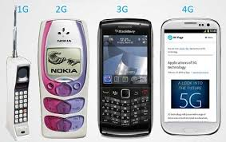
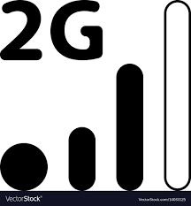
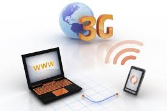
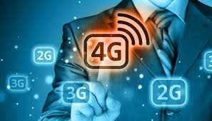
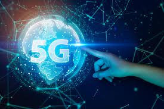

|  | 1G refers to the first generation of wireless cellular technology ( mobile telecommunications). These are the analog telecommunications standards that were introduced in the 1980s and continued until being replaced by 2G digital telecommunications. ... The antecedent to 1G technology is the mobile radio telephone. |
|  | 2G (or 2-G) is short for second-generation cellular network. 2G cellular networks were commercially launched on the GSM standard in Finland by Radiolinja (now part of Elisa Oyj) in 1991. ... phone conversations were digitally encrypted. Second generation cellphone technology is either time division multiple access (TDMA) or code division multipleaccess (CDMA). |
|  | 3G is the third generation of wireless mobile telecommunications technology. It is the upgrade for 2G and 2.5G GPRS networks, for faster data transfer speed. ... Later 3G releases, often denoted 3.5G and 3.75G, also provide mobile broadband access of several Mbit/s to smartphones and mobile modems in laptop computers. |
|  | 4G is the fourth generation of broadband cellular network technology, succeeding 3G. ... Potential and current applications include amended mobile web access, IP telephony, gaming services, high-definition mobile TV, video conferencing,and 3D television.4G is the fourth generation of mobile phone technology. It follows on from the existing 3G (third generation) and 2G (second generation) mobile technology. ... 4G technology builds upon what 3G offers, but does everything at a much faster speed. |
|  | 4 days ago - All four major US carriers now have some form of 5G wireless. ... 5G stands for fifth-generation cellular wireless, and the initial standards for it were set at the end of 2017. ... First of all, if you're hearing about 5G Wi-Fi or AT&T's "5G E" phones, they aren't5G cellular.5G is the fifth generation wireless technology for digital cellular networks that began wide deployment in 2019. ... 5G millimeter wave is the fastest, with actual speeds often being 1–2 Gb/s down. |